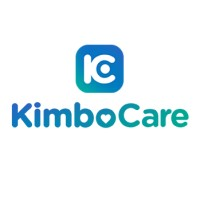
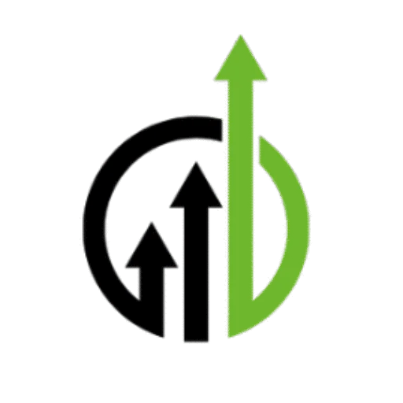

Bonjour, je suis
Ingénieur en informatique diplômé, orienté Data Engineering et Data Analysis. Je développe des pipelines de données, des tableaux de bord et des solutions analytiques pour transformer les données en informations exploitables et faciliter la prise de décision dans différents secteurs d'activité.
Ingénieur en informatique diplômé, orienté Data Engineering et Data Analysis. Je développe des pipelines de données, des tableaux de bord et des solutions analytiques pour transformer les données en informations exploitables et faciliter la prise de décision.
Lomé, Togo
Originaire du Tchad
Disponible pour relocation
Français
Anglais (B1+)
Arabe tchadien
Data Engineering · Data Analysis · Business Analysis · Business Intelligence
Concevoir des solutions fiables, exploiter les données et produire des analyses utiles aux décisions métier.
UTBM · Partenariat avec l'EPL
Diplôme obtenu · 2026
Université de Dschang, Cameroun
2020 – 2024
Visualisation de données et storytelling analytique
World Bank Group · 2026
Analyse de données et bases de données dans le cloud AWS
AWS (Coursera) · 2026
CI/CD, infrastructure as code et gestion de projets sur AWS
AWS (Coursera) · 2026
2ème place — Hackathon d'innovation (Équipe Smart-View)
EPL / Université de Lomé · 2025
Spécialisation — Compétition digitale, FinTech et stratégie d'innovation
Copenhagen Business School (Coursera) · 2025
Spécialisation — Paiements, blockchain, crowdfunding et IA dans la finance
University of Michigan (Coursera) · 2025
Configuration de switches, routeurs et réseaux sans fil
Cisco Networking Academy · 2025
Fondamentaux des réseaux, modèle OSI et protocoles TCP/IP
Cisco Networking Academy · 2025
Design d'interfaces et expérience utilisateur avec Figma
Future Interns
Organisation : UniPod Togo
Domaine : Entrepreneuriat et innovation numérique
Période : Septembre 2025 – Août 2026
Poste : Stagiaire académique — Entrepreneuriat
Projet principal : LINK

Entreprise : KimboCare
Lieu : Dschang, Cameroun
Période : Janvier – Juillet 2024
Poste : Stagiaire en développement web

Organisation : Future Interns
Domaine : Design UI/UX
Période : Janvier – Février 2026
Poste : Stagiaire en design UI/UX
Plateforme : Upwork
Lieu : N'Djamena, Tchad
Activité : Freelance
Positionnement : Rédacteur & traducteur (EN-FR) | Relecture | Assistance virtuelle
Projets couvrant Data Analysis, Data Engineering et UI/UX Design